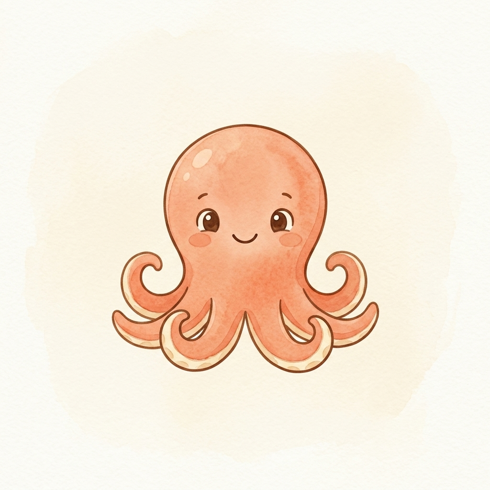
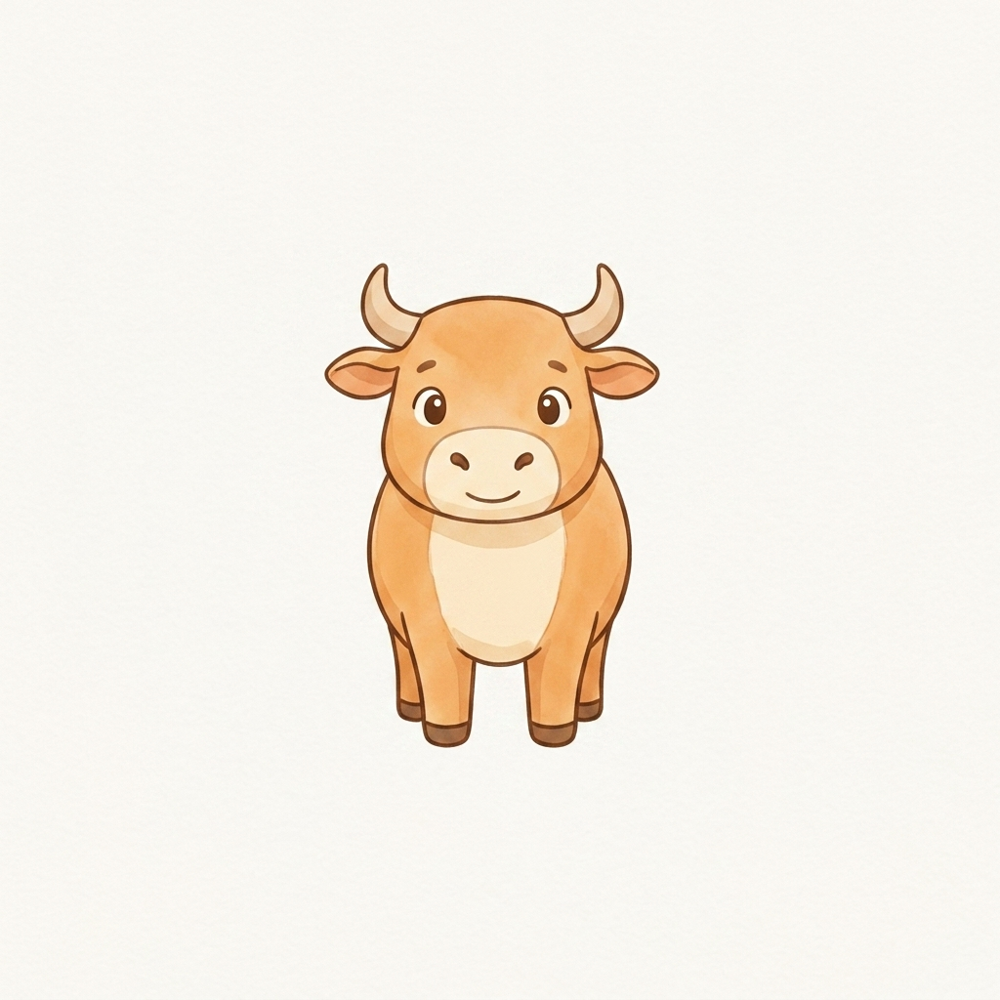
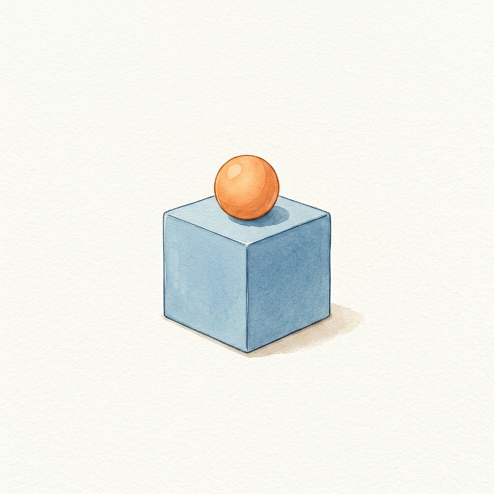
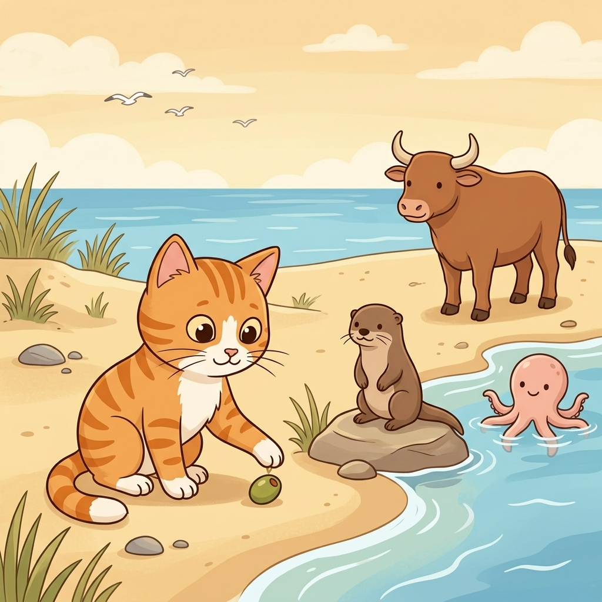
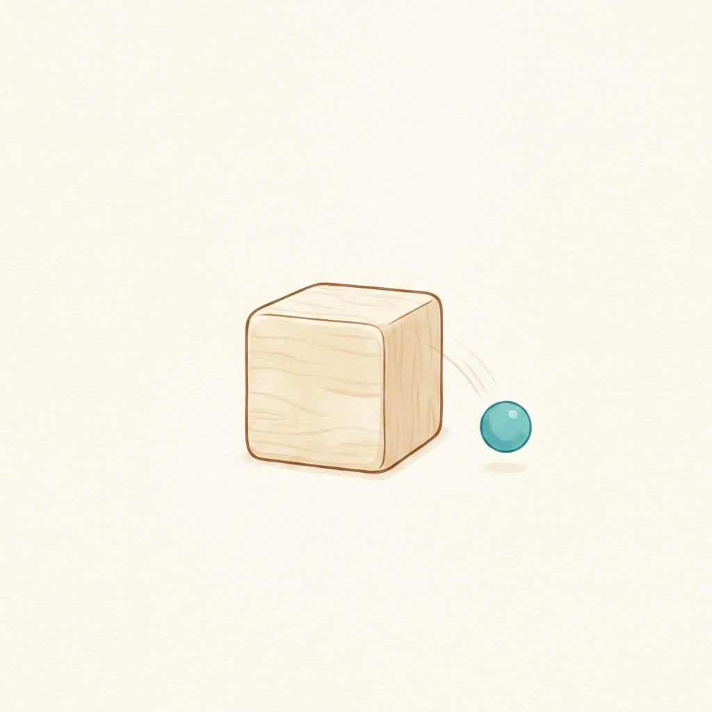
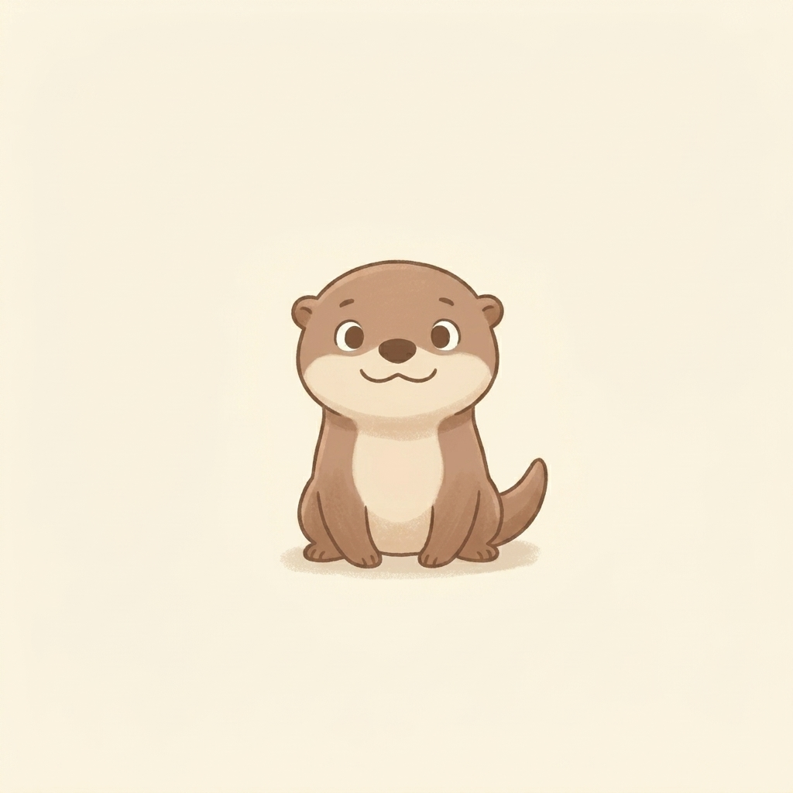
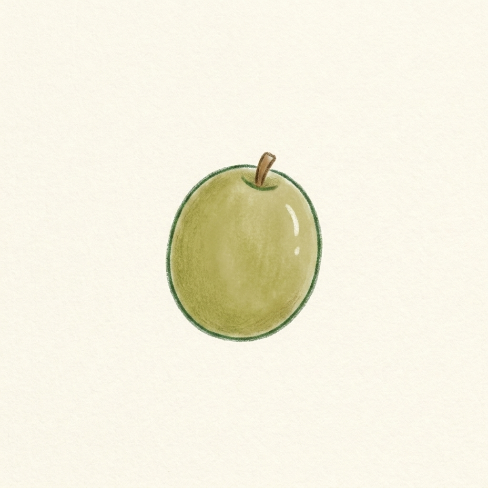

Step 1 · Say the Sound
O
O can say /ɑ/, like octopus.

octopus
ox
onSay one sound. Read a few words. Read one tiny story with Cat.

O can say /ɑ/, like octopus.

octopus
ox
on


Cat saw an octopus.
An otter sat on a rock.
An ox came by.
An olive fell off.
Cat put it on the sand.
Odd, said Cat.
Now you learned O.
That’s a win.
If it still feels fun, read the story again.